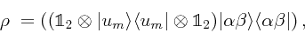
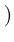
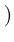
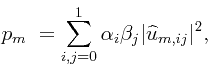

In this subsection, we check a calculation that would
be relatively difficult to check by hand.
Consider a pair of entangled qubits  and
and  , and another
entangled pair
, and another
entangled pair  and
and  . By performing a joint
measurement on, say
. By performing a joint
measurement on, say  and
and  , we can put
, we can put  and
and  in
an entangled state although they may be widely separated.
We begin by considering the most general projective measure
on
in
an entangled state although they may be widely separated.
We begin by considering the most general projective measure
on  and
and  , and calculate the reduced density matrix for
a single qubit and the probability of outcome. In this
example we calculate these quantities two ways-- one,
directly from the density matrix formalism, and two, via
formulas taking advantage of the particulars of this
problem. To do the first calculation by hand would be
extremely unpleasant, as it involves multiplying
, and calculate the reduced density matrix for
a single qubit and the probability of outcome. In this
example we calculate these quantities two ways-- one,
directly from the density matrix formalism, and two, via
formulas taking advantage of the particulars of this
problem. To do the first calculation by hand would be
extremely unpleasant, as it involves multiplying  matrices with several factors in a single element. Carrying
it out below with Maxima is a concise exercise.
At present this example does not continue by discussing
the measurements that maximize the resulting entanglement
of
matrices with several factors in a single element. Carrying
it out below with Maxima is a concise exercise.
At present this example does not continue by discussing
the measurements that maximize the resulting entanglement
of  and
and  .
.
Qubits  and
and  are in the state
are in the state

We consider the projective measurement  , that is
, that is
 and
and
 . We consider only a single basis vector
here, so we don't use the subscript
. We consider only a single basis vector
here, so we don't use the subscript  for Maxima vector name.
We need to use Maxima's
declare
for Maxima vector name.
We need to use Maxima's
declare to declare that
the components are complex.
The state
to declare that
the components are complex.
The state
 is normalized, but we don't need to impose that condition in
Maxima at this point.
is normalized, but we don't need to impose that condition in
Maxima at this point.

The initial joint state
 is pure and remains
so after the measurement applying
is pure and remains
so after the measurement applying
 to qubits
to qubits  and
and  .
But we write the density operator
because we will examine the reduced states, which are mixed.
In the case that
.
But we write the density operator
because we will examine the reduced states, which are mixed.
In the case that  and
and  are projected onto
are projected onto
 , the state
of the entire system of four qubits after the measurement is given by
, the state
of the entire system of four qubits after the measurement is given by
| (8) |  |

where conjsimp
(supplied via the Maxima listserv by Barton Willis) replaces  with
with  ,
and
,
and  n
 is the
n
 is the  identity matrix.
The output was suppressed with the trailing dollar sign because the
identity matrix.
The output was suppressed with the trailing dollar sign because the  is
a
is
a  matrix with large expressions for entries.
The reduced state of qubits
matrix with large expressions for entries.
The reduced state of qubits  and
and  is obtained by tracing out components
is obtained by tracing out components  and
and
 corresponding to qubits
corresponding to qubits  and
and  , ie
, ie
 .
.

Likewise, the reduced state of just qubit  is
is
 .
.

The second method of calculating  is as follows.
Considering the following map from
is as follows.
Considering the following map from
 to
to
 :
:
 .
The Maxima function implementing the mapping (9) is
.
The Maxima function implementing the mapping (9) is
![\begin{boxedminipage}{2.0\linewidth}
\begin{verbatim}(%i10) ket_to_mat(iket) :...
...[iket[1,1],iket[2,1]],[iket[3,1],iket[4,1]])$
\end{verbatim}
\end{boxedminipage}](img218.png)
Then the second calculation of  , which we call
, which we call rho_4a is given by
the following lines.

We compare (%o9) and (%o13), to see that the two methods of calculating
the reduced state for qubit  after the measurement give the same result
after the measurement give the same result
![\begin{boxedminipage}{2.0\linewidth}
\begin{verbatim}(%i14) is ( ratsimp(rho_4...
...atim}
\begin{dmath}[number={\%o14}]
\mathbf{true}\end{dmath}\end{boxedminipage}](img221.png)
Now we compute the probability
 that the state is in fact projected onto
that the state is in fact projected onto
 .
.

Finally, we compare this to the trace computed by hand from the expression following (9),
which is given by
| (10) |  |

Here we have used Maxima's
apply and
create_list
and
create_list functions.
Once again we compare the probabilities computed via the two methods
functions.
Once again we compare the probabilities computed via the two methods
![\begin{boxedminipage}{2.0\linewidth}
\begin{verbatim}(%i19) is (ratsimp(P1) = ...
...atim}
\begin{dmath}[number={\%o19}]
\mathbf{true}\end{dmath}\end{boxedminipage}](img227.png)
and see that they give the same result.